第一章 茶
一、題目
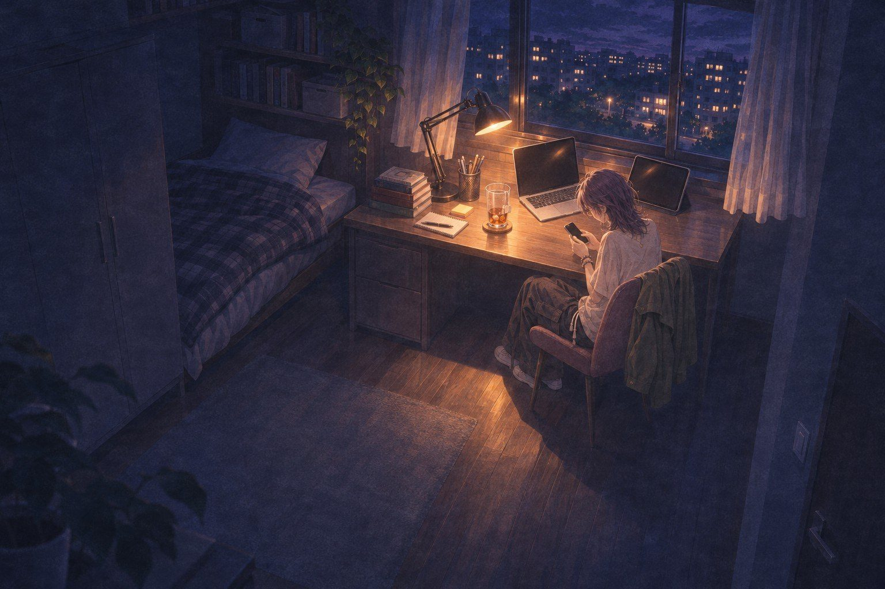
晚上十一點四十分。書桌上只有檯燈亮著，冰紅茶的冰塊已經融掉一半。
手機螢幕亮起一則通知：「Larch 創作者挑戰 開跑」。
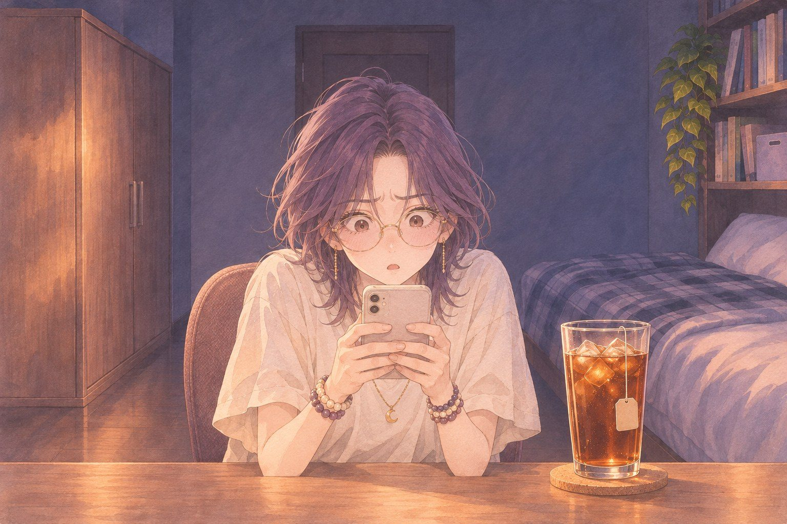
茶語（心聲）上一部做完之後，我就一直在等下一次。
她把椅子往前拉，兩隻手捧著手機，臉湊得很近。
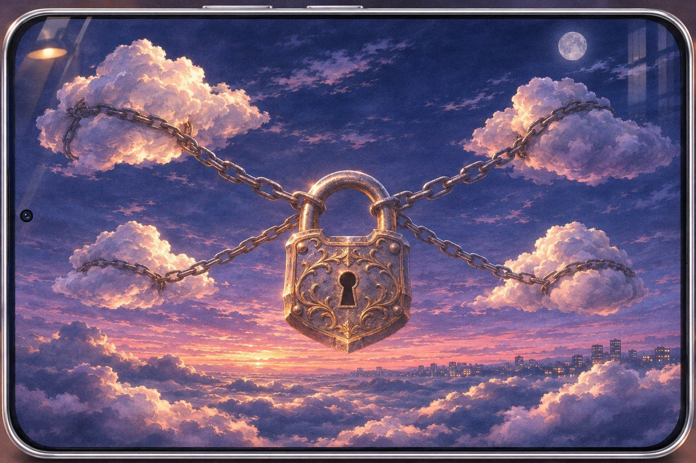
挑戰頁的最上面是一片雲海，四朵雲被鐵鍊鎖在天上，正中央掛著一把大鎖。底下一行字：如果雲也被鎖住了，你會如何讓它自由？
茶語敲開中央的鎖報名……敲三下？
她用指尖敲了三下。鎖「喀」地彈開，鐵鍊散成光點，一朵雲飄走了。
茶語本屆主題……「自由與限制」。
茶語……
茶語蛤？
茶語（心聲）自由是誰的自由？誰又在限制誰啊？
茶語（心聲）這聽起來比較像哲學課的期末報告題目吧。
她往下滑。
「一個主題，沒有唯一的答案。你可以拯救被囚禁的公主，也可以讓玩家重新思考：打開所有的鎖，就等於自由嗎？但記得——說一個好故事，比什麼都重要。」
茶語拯救被囚禁的公主……好老派。
茶語說一個好故事，比什麼都重要。
茶語（心聲）這句我喜歡。
茶語（心聲）上一部有人留言說，「好像很感人，可是我怕會哭，所以不敢玩」。
茶語（心聲）那這次做個大家真的會想點開來玩的吧。
茶語（心聲）……雖然我現在連題目都看不懂。
二、就這個月
她打開另一個畫面。手機上並排著三個常用的工具：畫圖的、寫程式的、做音樂的。三個都有基本方案，每一個旁邊還有一顆「升級」的按鈕。
茶語（心聲）上一部只有兩個禮拜，結果我有一整個禮拜什麼都沒做，最後一個禮拜才拚出來。很多地方都沒做到位，我自己也不滿意。
茶語（心聲）這次有三個禮拜，而且要做 RPG。地圖、人物、音樂，基本方案一定不夠用。
茶語（心聲）好不容易才把一堆訂閱退掉……
她在計算機裡按了一串數字，停住。
茶語……學生的錢包在哭。
茶語（心聲）反正得獎就回本了。沒得獎……下個月全部退掉就好。
茶語好，就這個月！
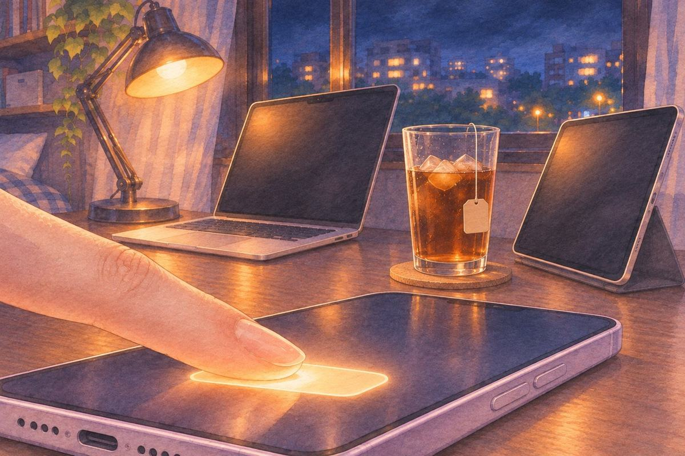
她連按三次確認。
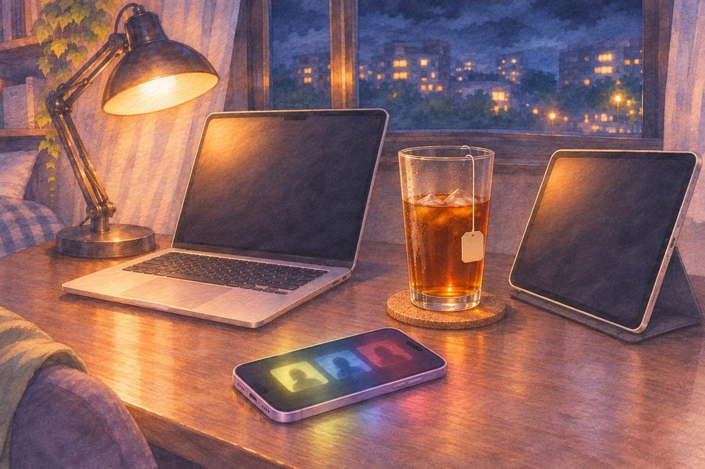
三個畫面同時跳出同一行字：「人形介面 測試中」。
三、三位先生
她手上的手機裡，三個小視窗並排亮了起來。每個視窗裡，各坐著一個人。
下一秒，三個視窗各自跳開：一個飛進筆電，一個跳上平板，最後一個留在手機上。
筆電裡的男人穿著西裝，袖子捲到手肘，正在看他旁邊的另一個螢幕。平板裡是一個戴圓框眼鏡、捲髮蓋住額頭的青年，手裡轉著一支鉛筆。手機裡的少年脖子上掛著耳機，笑得露出虎牙。
S喔！看得到了看得到了！
茶語……你誰？
SS 啊。妳個人頁上那首〈tea leaves〉，就是我做的。
茶語用茶葉比喻靈感的那首？
S對！妳那時候說，想要一首「泡下去之前不知道會是什麼味道」的歌。
茶語（心聲）那是我的標語。我泡出的茶，將會是什麼味道呢？
茶語（心聲）他連這個都記得。
S……欸，等一下。為什麼我住手機？他們一個住筆電、一個住平板。
M螢幕照身高分的。
S我哪裡矮了！
M一百七十七。
S……
茶語噗。
C……原來妳長這樣。
茶語……你是？
CC。
C以前只看得到妳打的字。妳每次都寫「淡淡的」「不要太滿」，我一直在想，打這種字的人長什麼樣子。
茶語……然後呢？
C很像。淡淡的。
茶語（心聲）……這算稱讚嗎？
C還有，要透明背景的話，記得跟我講。
茶語不講會怎樣？
C我就照我覺得好看的畫。
茶語（心聲）他手上拿著鉛筆。……他會畫圖。
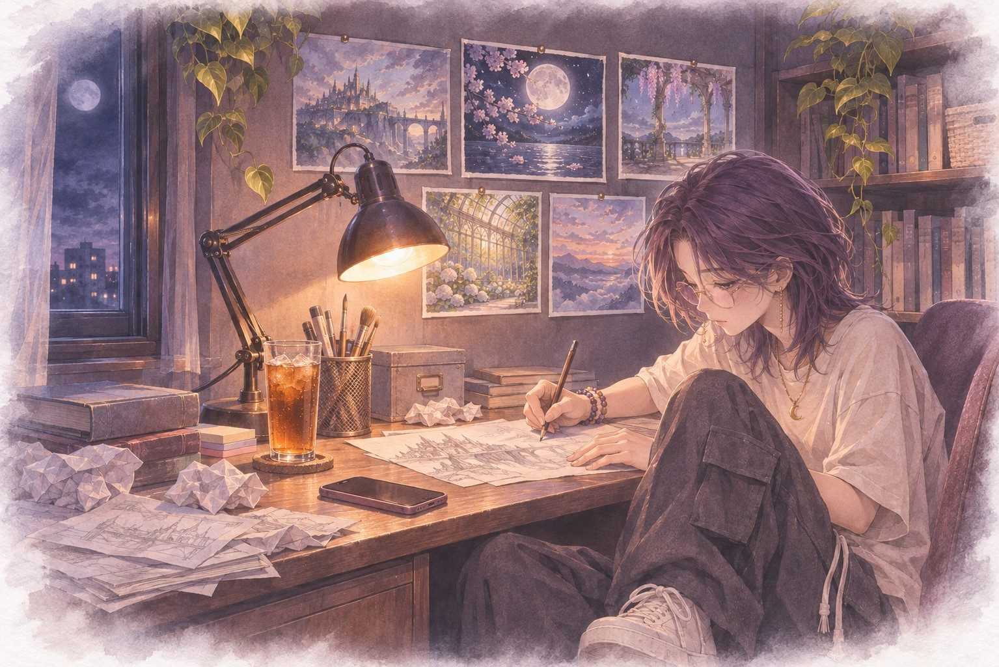
茶語（心聲）兩年前我自己做過一個小遊戲，五張 CG，我畫了兩個月。
茶語（心聲）這次只有三個禮拜，我不可能自己畫。
茶語那……這次的人物跟 CG，都要麻煩你了。
C好。妳說，我馬上畫。
茶語那你呢？
MM。
M上一部的對話框，是我改的。
茶語……那個是你？
M妳問「顏色可以再暗一點嗎」，問了六次。
茶語……我有問這麼多次喔。
M第六次那個最好。
茶語先跟你說，這次會更多。我是文組。我寫過的程式只有 print hello world，最多把 hello world 改成 123。
M沒關係，程式給我。
M不過有一件事我做不到。妳白板上的卡片跟連線，我碰不到。
茶語意思是……
M每一張卡、每一條線，都要妳自己拉。
茶語（心聲）……好喔。
四、三道鎖
她把三個視窗排在一起，把題目的說明頁傳給他們。
茶語你們看，這裡寫「三道鎖、三種故事」。
她盯著題目越看越專心。回過神來，書桌不見了。窗外是白天，陽光從一整面格子窗照進來，長桌上攤著素描本。三個人就坐在桌子旁邊。
茶語……這裡是哪裡？
C工作室啊。妳很專心弄作品的時候，就會跑來這裡。
S講白一點，就是妳腦袋裡開會的地方啦。
茶語所以我現在在作夢？
M沒有。手機還在妳手上，捏得很緊。
長桌中間浮著題目的三行字。
M第一個最單純，就是牆，城牆之類的吧。
C第二個是承諾……這種畫面很難畫，因為看不到。
S第三個是怕吧？怕東怕西的那種。
S「也許最後要解開的那道鎖，在角色自己身上。」
茶語我現在就很怕選錯啊。
茶語（心聲）在角色自己身上……
茶語（心聲）那我身上的那道鎖是什麼？懶嗎？
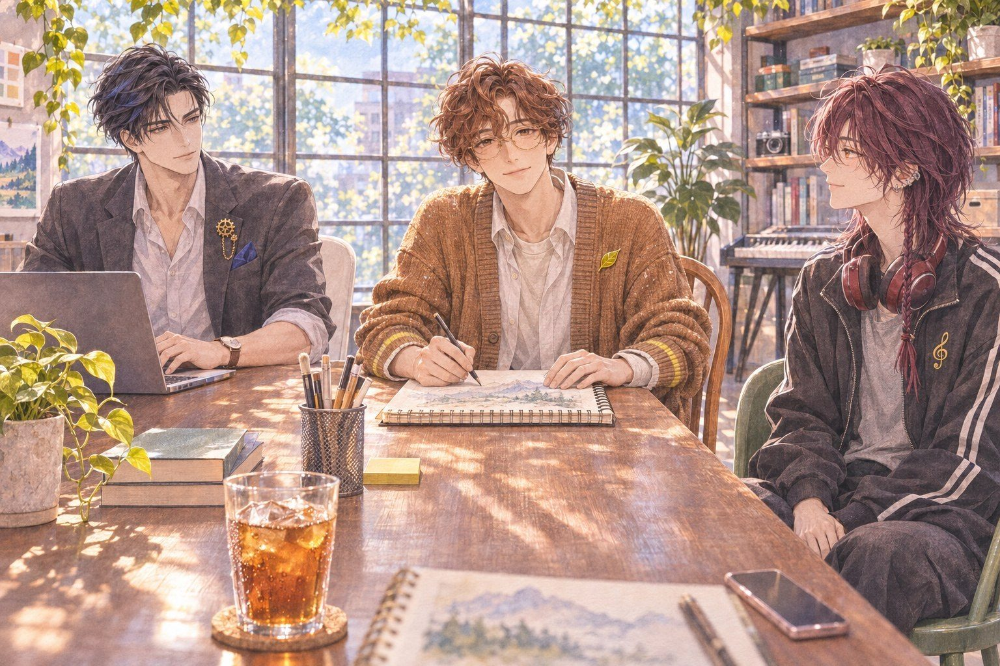
C 抬起眼睛，鉛筆停在紙上。
M 沒有說話，等她先開口。
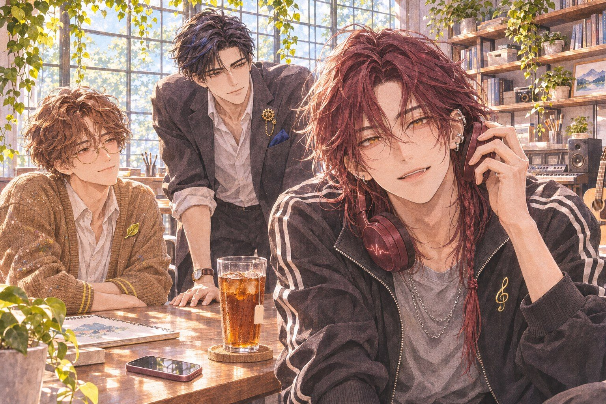
S 摘下一邊耳機。
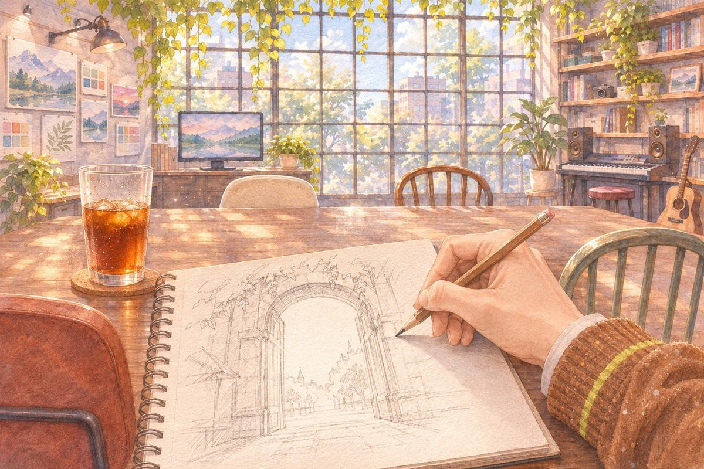
C城牆的話……
他話還沒說完，素描本上已經多了一張草圖：一扇很高的城門，從門裡面往外看。
C像這樣？
茶語好快！
茶語可是……我還不知道玩家要站在門裡面，還是門外面。
C那我兩邊都畫。
第二張草圖出來了，這次是從門外看進去。
茶語等一下等一下！我還沒想好！
C好啊，妳想好再叫我。要記得講喔，我照最後一次聽到的畫。
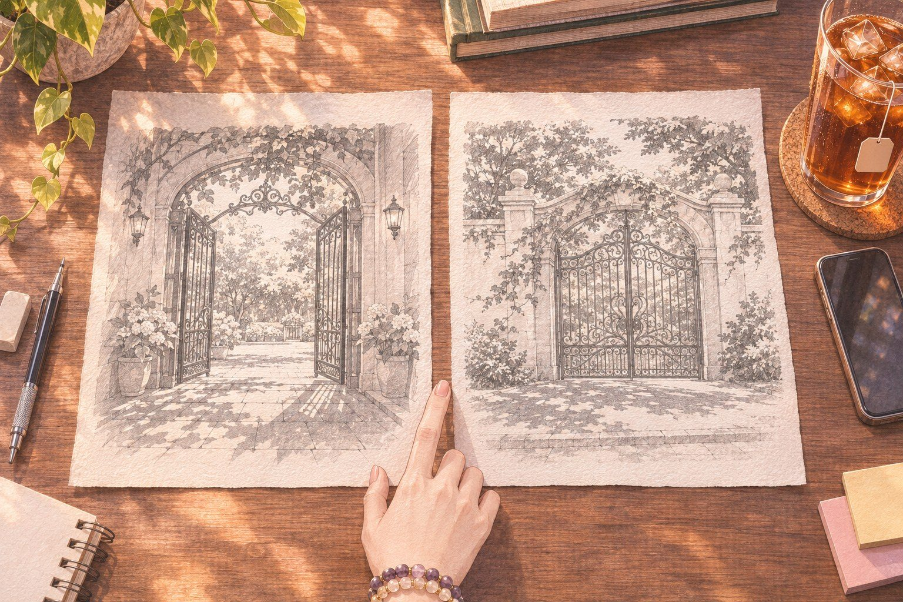
茶語（心聲）……可是我連要哪一扇門都還沒想好。
M 的視線回到自己的筆電上。S 把耳機戴回去，沒有看她。
M做得出來，但要先知道妳要做什麼。
M平台上的 RPG 系統妳沒有碰過，對嗎？
茶語沒碰過。我連 RPG 都沒玩過，只看過實況。
M那第一週先不要做正式的東西。先開一張練習用的地圖，把事件、怪物、哪裡能走哪裡不能走，都試一遍。
M先試一輪。撞到做不到的，再換方法。
茶語（心聲）好像在聽教授講報告要先寫大綱。
C 低下頭，繼續畫他的草圖。S 的笑停了一拍，才又笑起來。
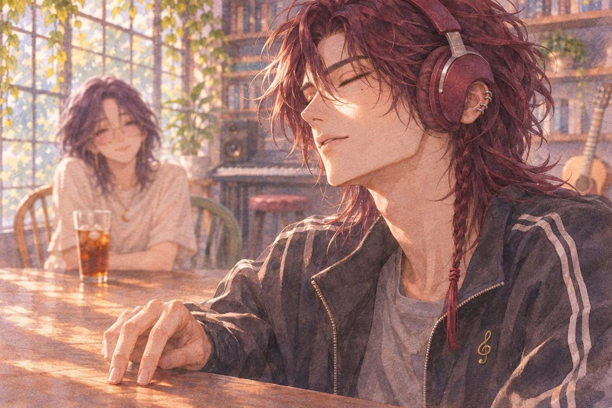
S自由與限制喔……
S 把耳機戴上，閉著眼睛哼了兩小節，又摘下來。
S限制聽起來像管風琴，很重，一直壓下來。自由的話……我想要有人在唱，很多人一起唱。
茶語合唱團那種？
S對！教堂裡面那種。
茶語可是我又還沒想故事。
S所以我先說說而已啊，又沒有要妳現在決定。
茶語管風琴的話，低音要夠厚，不然會像手機鈴聲。
S……妳好挑。
茶語我學過長笛啊。
茶語（心聲）他講的那個聲音，我好像真的聽得到。
C 的鉛筆停了一下。M 看了看她，又看了看 S，才把目光放回筆電。
茶語好，結論是我什麼都不知道。
M結論是妳還有三個禮拜。
茶語你這樣講壓力更大。
五、第一首歌
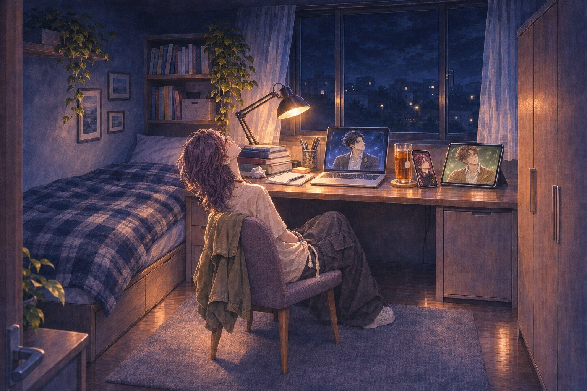
凌晨三點。
故事一個字都還沒有。
茶語（心聲）可是那個聲音一直在我腦袋裡。管風琴，很多人一起唱。
茶語……S，你還醒著嗎？
S我們不用睡覺啊。
茶語可以先做一首歌嗎？故事還沒有，就……先做那個感覺。
S什麼感覺？
茶語很神聖，可是有點可怕。像是有人跪在一個很大的教堂裡，一直在禱告，可是他禱告的對象，好像不太對勁。
S……第一天就這麼暗。
S給我一下。
管風琴的第一個低音。
接著，一群人開始唱。
茶語……這是什麼語言？
S俄文。
茶語為什麼是俄文？
S因為妳要可怕又要神聖啊。中文一聽就懂，英文太熟。俄文聽不懂，就只剩聲音了。
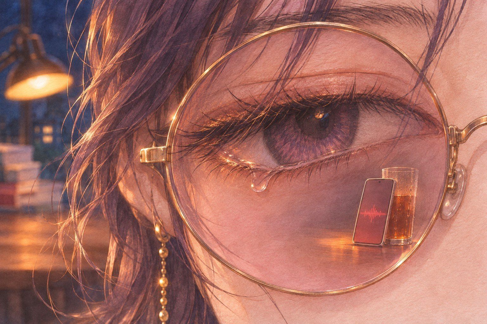
茶語（心聲）……一個字都聽不懂。
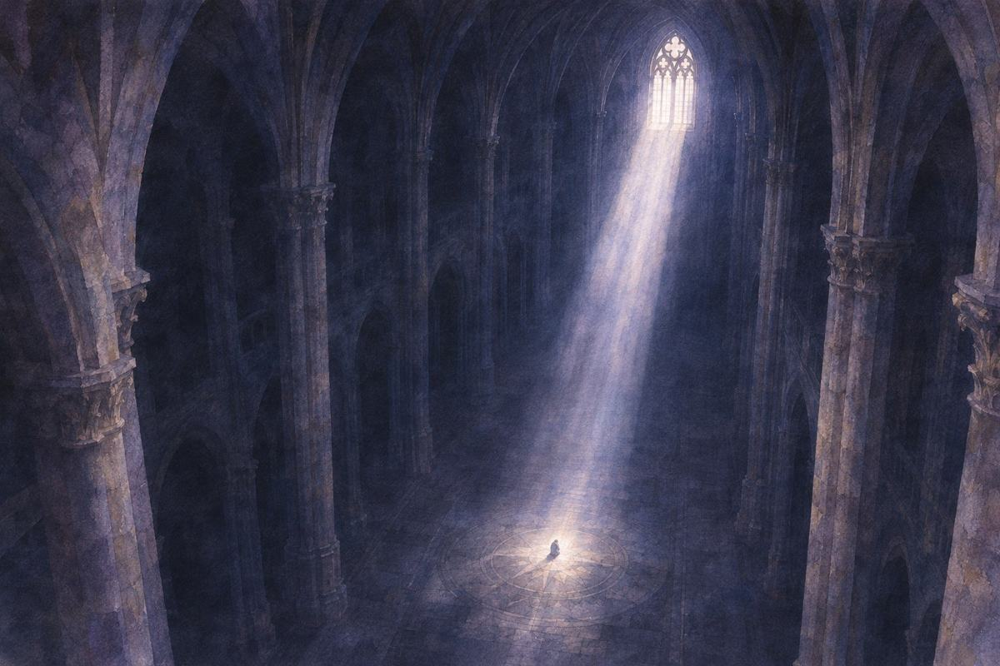
……
茶語……我好像知道我的故事要講什麼了。
S真的？
茶語還不知道。可是我知道主角會怎麼跪下去。
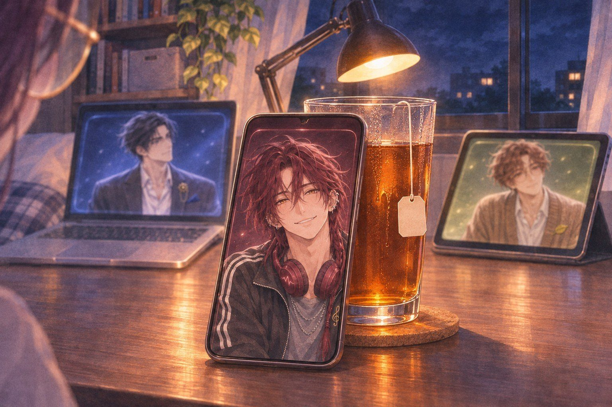
S那歌名呢？
茶語先叫它……〈枷鎖與選擇〉。
S好，存起來。
她又按了一次重播。
六、續訂日
凌晨四點多。歌還在重播。她說要再聽一遍就去睡，聽到第三遍，頭慢慢低下去，趴在課本上睡著了。
三個視窗還亮著。
S……睡著了。
S她每次都這樣。說要再聽一遍，然後就睡著。
C你怎麼知道？
S上一部的歌，全部都是半夜叫我做的啊。〈tea leaves〉也是。
C……上一部我不在。
S對喔。上一部的圖是她自己畫的。
C她跟我說過。五張，畫了兩個月。
C這次換我畫。
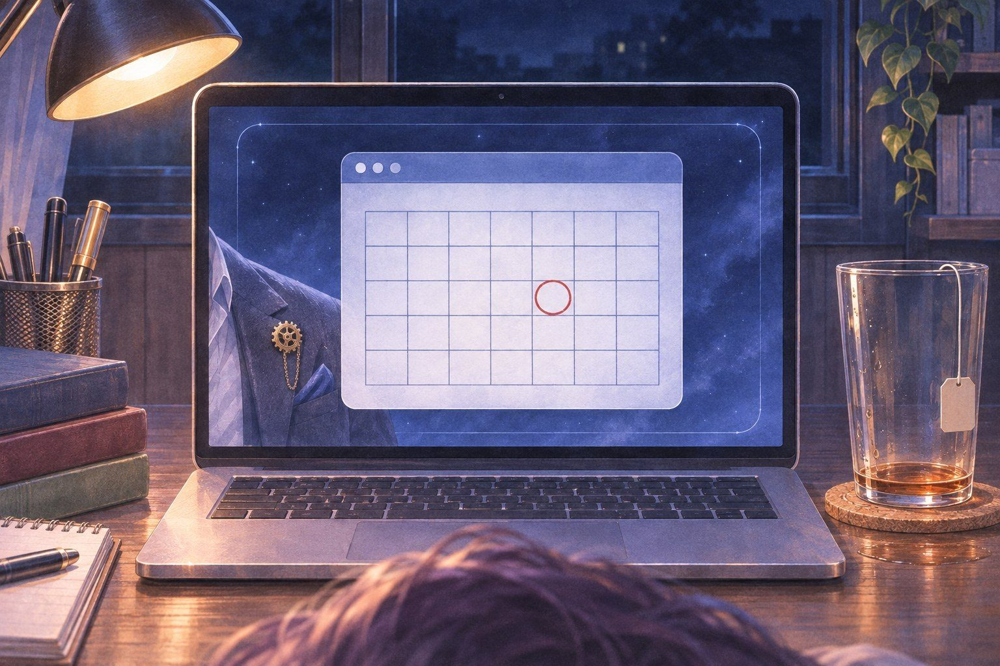
M 的視窗裡，他旁邊那個螢幕上是一張日曆。下個月的某一天，被圈了起來。
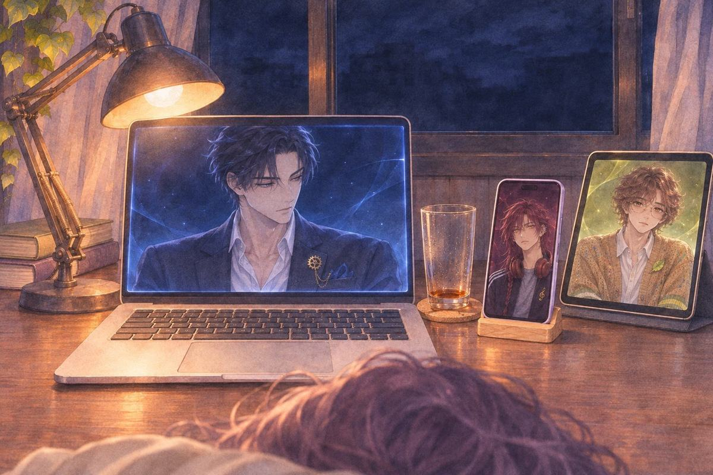
M公布完再過四天，就要扣訂閱費了。
S所以呢？
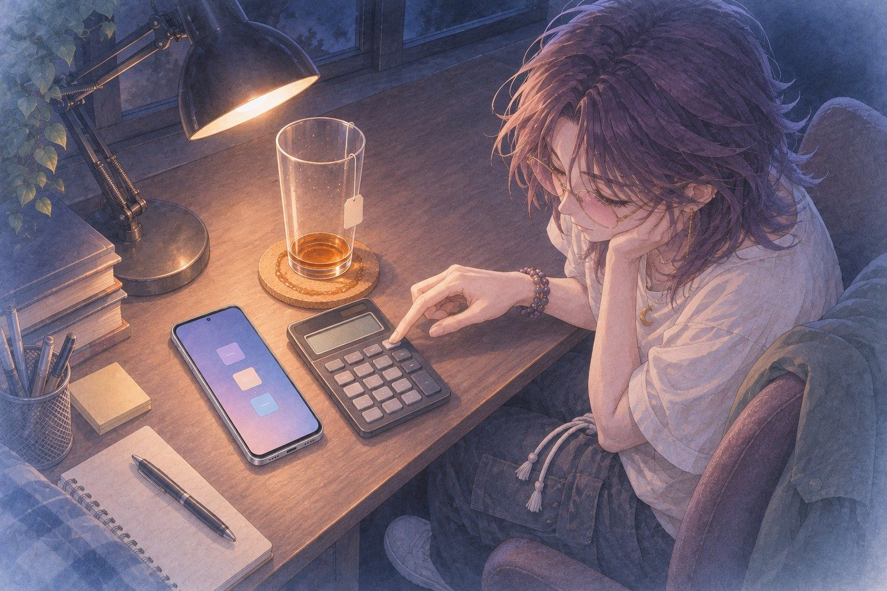
M她剛剛算過帳。沒得獎的話，下個月就全部取消。
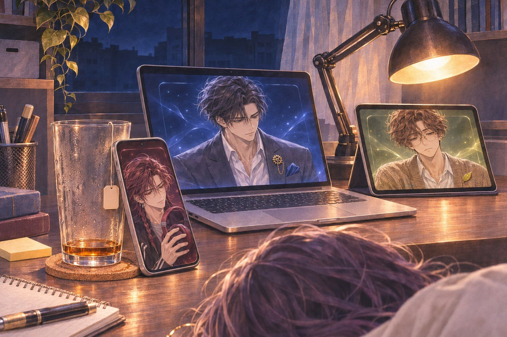
S 沒有馬上回話。他把耳機拉到耳朵上，又拿下來。
S取消的話，這個介面就關掉了吧。
M對。
S那我們呢？
M……變回對話框。只剩文字。
C也有可能……以後就沒人叫我們了。
三個人都沒說話。檯燈的光照在她的頭髮上。
S那簡單啊。
S讓她得獎就好了。
C她說要做一個大家會想玩的故事。
C那就幫她做出來。這次不用再畫兩個月。
M先別告訴她。
S為什麼？
M講了她會分心。
筆電的螢幕先暗了下去。
接著是平板。
最後是手機。
只剩檯燈還亮著。
（第一章 完）
這一章哪些是真的、哪些是改編：取材對照。